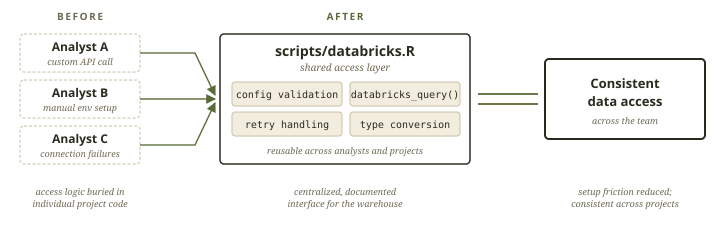
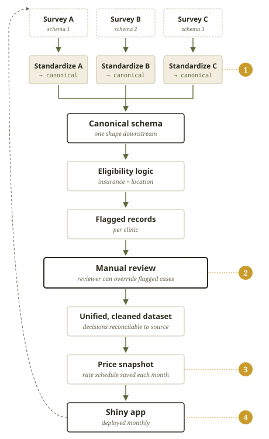

01 — What I heard about the role
The role, as I understood it, operates across two complementary priorities:
Help each line of business bring products to market faster by standardizing workflows and increasing operational capacity.
Identify and implement practices that improve both model performance and adoption of the platform itself.
Each LOB brings its own approach to modeling. This creates an opportunity to identify shared patterns and standardize high-impact parts of the workflow—both upstream (data and feature development) and downstream (model review, deployment, and refresh)—to improve consistency and scale production-ready outputs.
I’ve prepared this brief to highlight how my previous experience could be leveraged to support the Earnix Design team. In my current role, I’ve worked to optimize our processes under similar constraints. The sections that follow show how I’ve approached this problem in practice, how I would get established in this role, as well as a brief demo of relevant work.
02 — Collaboration and Best Practices
CASE STUDY · STANDARDIZED DATA ACCESS
During a period of tech stack transition, the team needed to access the warehouse before a standardized pattern had been fully implemented. Analysts were attempting to connect in different ways, which created friction and inconsistency.
In one project, I had written the connection logic needed to pull eviction data from the warehouse. When coworkers were unable to connect themselves, I pulled that logic into a shared script, scripts/databricks.R, creating a consistent, documented interface for querying Databricks rather than requiring each analyst to write their own API calls.
This served as a bridge during the transition period, allowing the team to reliably access data while longer-term solutions (e.g., standardized data sharing patterns like Delta Sharing) were being implemented.

Impact
03 — Applying Best Practices to Create Durable Systems
CASE STUDY · ELIGIBILITY & REIMBURSEMENT PIPELINE
A stakeholder needed to reimburse partner clinics for a service whose pricing was changing month to month. The inputs were a set of incompatible surveys — different schemas, different field semantics — submitted by different clinics. Eligibility had to be determined per record using location and insurance logic, and the result had to be auditable enough that a human reviewer could trace dollars and decisions back to its source row.
An ETL + review + delivery system that runs monthly, refreshes with new data, and feeds a Shiny app that the stakeholder uses to authorize reimbursements.

renv, the process has run reliably for 18 months with minimal maintenance.
$1M+
in annual reimbursements
authorized through this system
05 — Growing in new domains
My work has spanned education, eviction, maternal health, and more. The through-line in my experience isn’t the subject matter, but the system underneath. How data moves, where decisions get made, and what breaks under load. Insurance pricing is a domain I haven’t worked in directly, but I can offer my approach to producing excellent work in any subject area.
Alignment
I start by aligning on how the system currently works:
Ask me about: mapping clinic intake, surveys, and federal reimbursement rules into a single pipeline.
Exposure
Before introducing changes, I spend time working within current processes:
Ask me about: linking student records to eviction filings with no shared identifiers.
Implementation
Once patterns are clear, I focus on small, high-impact interventions:
Ask me about: building a Shiny dashboard that took stakeholder questions off my desk.
Insights
As patterns stabilize, I focus on:
Ask me about: a design system that started as one report but turned into 14.
06 — Live work
A few things you can poke at directly. The first is a small Shiny app I’m building this week specifically to demonstrate the pipeline pattern from section 3 — applied against an unfamiliar dataset (NSF), in their stack — so you can see the same architecture in a context that isn’t my day job.
EMBEDDED · IN DEVELOPMENT shinyapps.io · live by [DATE]
NSF Data Explorer — coming this week Built deliberately as a portfolio piece against an unfamiliar dataset:
the same standardize → modular pipeline → manually-reviewable Shiny pattern
used on the reimbursement system in section 3. https://emilyrstern.shinyapps.io/[APP-NAME]